Case 012026Raymind.AI
Kai's Greedy Loop봇으로 맞추고, 사람에게 맞게 다시 만든 게임
제 스튜디오에서 기획하고 만드는 한 손가락 아케이드 로그라이트로, 코드는 전부 AI 에이전트가 씁니다. 반응이 완벽한 봇으로 밸런스를 맞추자 한 판 중앙값이 220초였습니다. 실제 순위표에서 사람의 한 판 중앙값은
- 역할
- 게임 기획, 아트 디렉션, 밸런스, 플레이테스트,
개발(Claude Code) - 기간
- 2026년 8월 22일 첫 커밋, 출시 뒤에도 계속 바뀌는 중
- 플랫폼
웹(greedyloop.com, dopaplay.io)과 Google Play- 팀
- 1인. 코드는 AI 에이전트가 쓰고, 저는 기획을 이끌며 모든 변경을 검토합니다
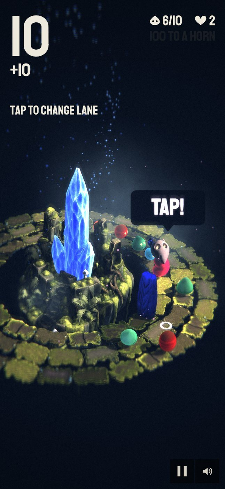
프로젝트 소개
Kai's Greedy Loop는 한 손가락 아케이드 로그라이트입니다. 작은 크리처가 고리 모양의 길을 달립니다. 탭하면 차선을 바꾸고, 누르고 있다가 떼면 먹은 것을 확정합니다. 규칙은 그것이 전부입니다. 모을 크리처가 64종, 저마다 진화 7단계가 있고, 색이 다른 여섯 세계가 관문으로 이어집니다.
2026년 8월 22일에 시작했고, 저는 이 게임의 코드를 한 줄도 직접 치지 않았습니다. 코드와 빌드, 검사는 AI 에이전트가 하고, 저는 화면을 봅니다. 에이전트는 화면을 볼 수 없으니, 무엇이 틀렸는지 정확히 말해 주는 것이 제 일입니다. 첫날 에이전트는 게임을 수천 번 플레이하는 봇도 만들었고, 밸런스는 그 봇으로 맞췄습니다.
- 제가 정하는 것
- 규칙, 손맛, 아트 디렉션, 그리고 무엇을 덜어 낼지
- 에이전트가 하는 것
- 코드, 빌드와 검사, 게임을 수천 번 플레이하는 봇
- 측정 도구
- 완벽한 봇, 사람의 한계를 넣은 봇, 빌드 번호가 붙은 모든 기록, 라이브 게임의 플레이 이벤트
- 아트에 쓴 AI
- 3D 모델, 아트, 음악, 목소리의 상당수가 AI 도구에서 시작했습니다. 하나하나 고르고 다듬고 배치하는 일은 제가 하고, 플레이 중에 새로 생성되는 것은 없습니다
- 라이브
- greedyloop.com, dopaplay.io, Google Play
- 해결하려 했던 플레이어 문제
- 반응이 완벽한 봇으로 밸런스를 맞췄고, 한 판 중앙값 220초는 목표에 딱 맞았습니다. 순위표에서 사람의 한 판 중앙값은
21~26초였습니다. 가장 많이 한 테스터는 사흘 동안 99판을 했고, 그중 87판이 첫 세계에서 끝났습니다. 그 테스터는 그 뒤로 다시 오지 않았습니다. - 왜 중요했나
- 만든 것을 아무도 보지 못하고 있었습니다. 여섯 세계 중 다섯은 저 말고 본 사람이 없었습니다. 병목은 첫 관문이었습니다. 뒤쪽 관문의 기준을 낮춰도 소용이 없었고, 사람이 첫 1분을 넘게 해야 했습니다.
- 어떤 과정으로, 어떤 선택을 했나
- 봇에 사람의 한계를 넣어, 완벽한 봇은 답할 수 없던 질문, 곧 사람이 첫 관문을 넘는지에 답하게 했습니다. 모든 판에 빌드 번호를 붙이고, 첫 1분을 실제 플레이 안의 레슨으로 다시 만들어 두 동작을 직접 해 보며 배우게 했습니다.
- 결과와 배운 것
- 첫 1분은 이제 죽을 일 없는 세 단계이고, 누르고 떼기는 직접 해 보며 배웁니다. 더 많은 사람이 첫 관문을 넘는지는 아직 측정하지 못했습니다. 예전 순위표에는 4주치 빌드가 섞여 있었고, 꾸준히 하는 사람은 사실상 저 한 명이었습니다. 그 빈틈이 가장 큰 배움입니다.
그리고 순위표의 사람
첫 세계에서 끝난 판
누르고 떼기, 블록 부수기
손가락 하나, 동작 둘.
첫날의 목표는 규칙 하나, 같은 판이 두 번 없는 게임, 몇 년이고 할 수 있는 게임이었습니다. 탭하면 차선을 바꿉니다. 누르고 있다가 떼면 먹은 것을 확정합니다. 나머지도 모두 그 손가락 하나로 할 수 있어야 합니다. 블록을 피하고, 크리처를 싣고 다니고, 확정하기 전에 얼마나 더 욕심을 낼지 정하는 것까지.
첫 빌드는 평평한 2D 원이었습니다. 지금은 같은 규칙이 여섯 세계에서 3D로 움직이고, 관문은 저마다 전혀 다르게 생긴 두 세계 사이의 문이 됩니다.
dopaplay.io/ko/greedyloop에서 브라우저로 해 볼 수 있습니다.
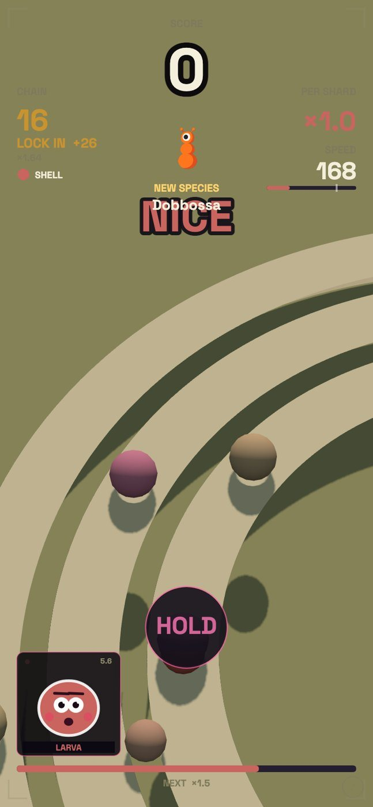
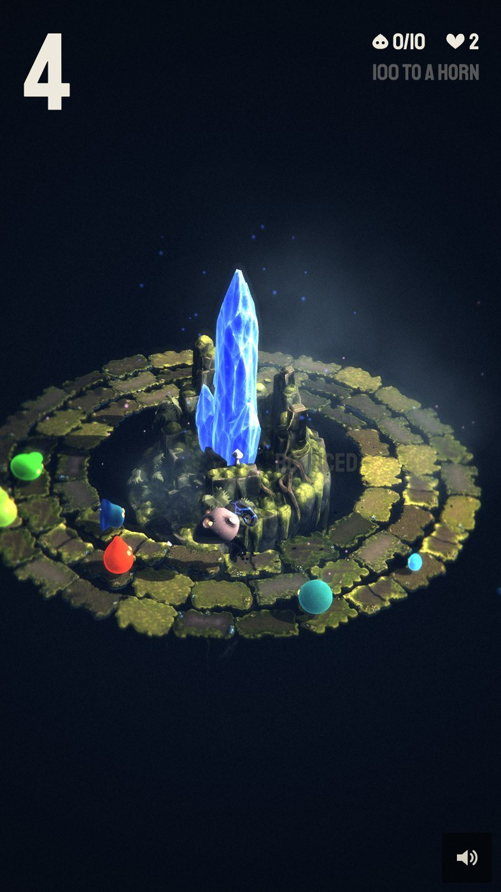
여섯 세계, 규칙 하나
관문을 지날 때마다 Kai는 앞 세계와 전혀 다른 세계에 떨어집니다. 가만히 있는 길은 첫 길뿐이고, 그다음부터는 휘고, 숨 쉬듯 넓어졌다 좁아지고, 꼬여서 교차합니다. 세계마다 새로운 골칫거리도 하나씩 생깁니다.
여섯 세계를 묶는 제 규칙은 하나입니다. 플레이어가 이미 아는 것은 몰래 다르게 움직이면 안 됩니다. 움직임이 바뀌면 모양도 바뀌어야 하니, 더 빠른 벽은 다른 벽처럼 보여야 합니다.
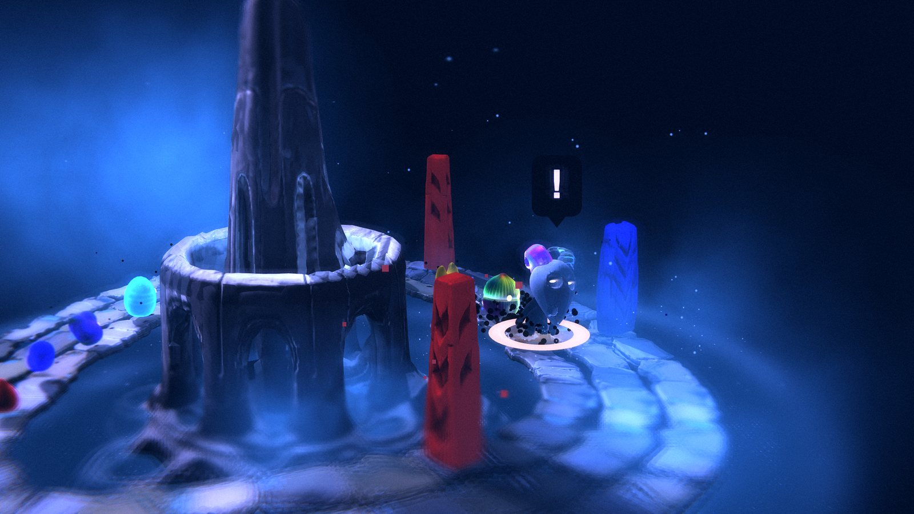
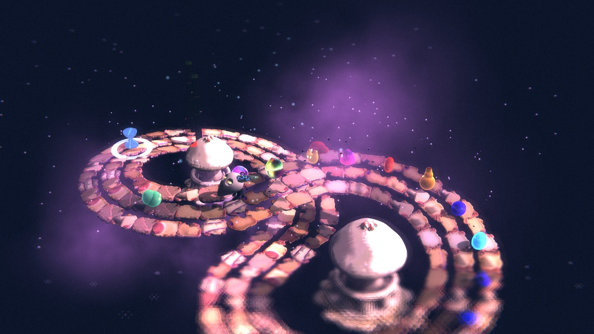
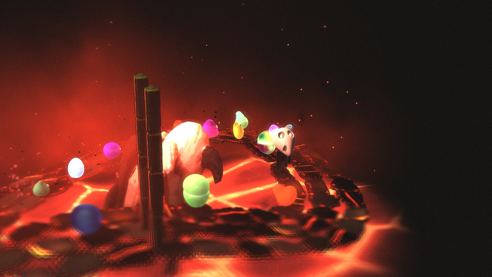
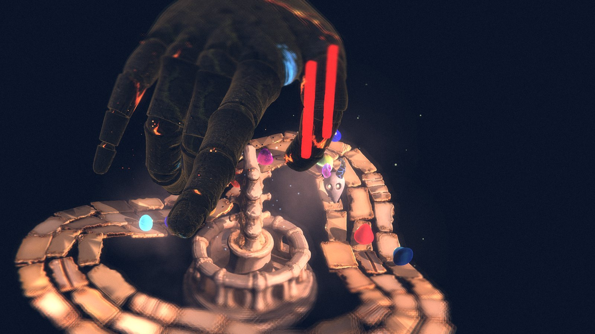
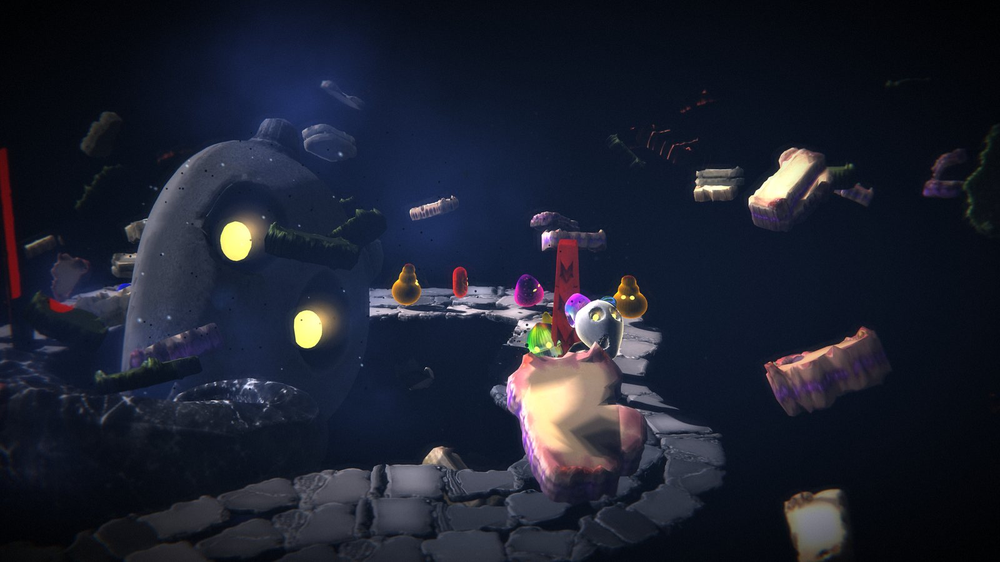
세계마다 greedyloop.com/worlds에 따로 페이지가 있습니다.
봇은 220초를 버텼고, 사람은 22초를 버텼습니다.
게임의 밸런스 목표는 모두 반응이 완벽한 봇에서 나온 숫자였고, 봇의 결과는 목표에 맞았습니다. 그러다 실제 순위표를 읽고, 사람이 하는 것과 봇이 하는 것은 다르다고 에이전트에게 말했습니다.
| 완벽한 봇 | 순위표의 사람 | |
|---|---|---|
| 한 판 중앙값 | 220초 | |
| 가장 긴 | 395초 이상 | |
| 셋째 세계 이상 도달 | 대부분의 판 | 약 200판 중 2판 |
봇 숫자는 당시 밸런스 설정으로 돌린 결과입니다. 순위표는 2026년 9월 21일에 읽었고, 저를 뺀 이름을 남긴 플레이어 84명의 758판입니다. 매일 바뀐 게임의 4주치가 섞여 있습니다.
가장 많이 한 테스터가 사흘 동안 플레이한 판 가운데 첫 세계에서 끝난 판. 사흘째 이후로 다시 오지 않았습니다.
저 말고 아무도 보지 못한 세계. 후반 이벤트 대부분도 마찬가지였습니다.
꾸준히 하는 플레이어는 사실상 저 한 명. 그래서 순위표로 알 수 있는 것은 사람이 봇보다 훨씬 짧게 버틴다는 것 정도였습니다.
봇이 맞춘 목표는 사람이 실제로 하는 게임에 대해 아무것도 말해 주지 않았습니다.
만든 것을 아무도 플레이하지 못했습니다
게임의 세계, 크리처, 이벤트 대부분이 저 말고는 거의 아무도 닿지 못하는 지점 너머에 있었습니다. 뒤쪽 콘텐츠에 쓴 한 주는 아무도 보지 않는 것에 쓴 한 주였습니다.
병목은 첫 관문이었습니다
뒤쪽 기준을 낮춰도 달라지는 것이 없었습니다. 사람들은 거기까지 가지 못했으니까요. 필요한 것은 사람이 첫 관문을 넘게 하는 일이었고, 첫 1분이 문제의 전부였습니다.
두 번째 동작을 건너뛰었습니다
많은 플레이어가 누르고 떼는 법을 배우지 않은 채 지나갔습니다. 떼지 않으면 먹은 것이 하나도 확정되지 않으니, 게임의 절반만 하고 있던 셈입니다.
그래서 순서를 정했습니다. 뒤쪽을 손보기 전에, 사람이 첫 1분을 넘게 한다.
측정 도구를 먼저 바꾸고, 그다음 첫 1분을 바꿨습니다.
봇에 사람의 한계를 넣습니다
에이전트가 봇에 반응 시간, 타이밍 오차, 가끔 늦는 조작을 담은 프로필을 넣었습니다. 완벽,
쌓인 기록이 아니라 빌드별로 판정합니다
올라오는 모든 판에 빌드 번호, 무엇에 죽었는지, 어디까지 갔는지, 제 테스트 브라우저에서 온 판인지가 붙습니다. 제 테스트 판은 제 실제 판과 따로 봅니다.
실제 플레이 안에서 가르칩니다
에이전트에게 준 방향은 이것이었습니다.
죽지 않고, 갇히지 않습니다
레슨 중에는 죽을 수 없습니다. 단계마다 실제 시간 기준의 안전장치가 있고, 블록에 부딪혀도 한 번 더 기회가 있습니다. 처음 하는 사람이 모든 단계를 틀려도 계속 달리고 있습니다.
플레이어가 생각할 것을 덜어 냅니다
8일째 게임에는 변이 18개, 융합 8개, 포탑, 미스터리 상자가 있었고, 모두 작동했습니다. 저는 이렇게 적었습니다.
세 단계로 다시 만든 첫 1분
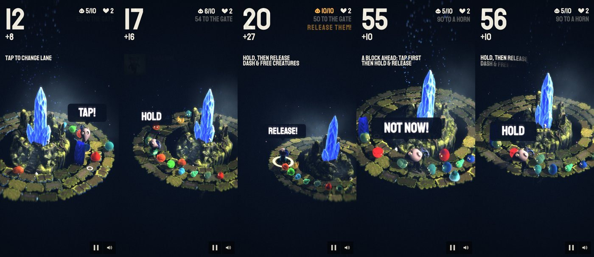
1. 탭
내 차선 바로 앞에 블록이 있습니다. 게임이 3분의 1 속도로 느려지고, 막힌 차선에는 X, 비켜 갈 길에는 고리가 서고, Kai 위 말풍선이 해야 할 동작을 알려 줍니다. 탭해서 차선을 옮기면 통과입니다.
2. 누르고, 떼기
내 차선에 크리처가 줄지어 있습니다. 셋을 싣고 길이 비면 말풍선이 HOLD라고 하고 엄지 아래 고리가 차오르고, 이어서 RELEASE라고 합니다. 떼면 대시하며 크리처를 풀어 줍니다.
3. 블록 부수기
내 차선 앞에 블록이 있습니다. 레슨은 블록보다 한참 앞에서 누르라고 하고, 블록이 대시가 닿는 거리에 들어와야 RELEASE라고 합니다. 대시가 블록을 부수고, 튕기거나 놓쳐도 한 번 더 기회가 있습니다.
성공할 때마다 말풍선이 환호하며 동작의 이름을 부릅니다. THAT'S HOW YOU CHANGE LANE, FREE THEM, BREAK A BLOCK. HOW TO PLAY로 레슨을 언제든 다시 볼 수 있습니다.
그래도 누르기를 건너뛸 때
닷새 뒤에도 플레이어들은 누르기를 배우지 않고 지나가고 있었습니다. 그래서 레슨을 바꿔, 누르기를 직접 해 봐야만 넘어갈 수 있게 했습니다.
레슨은 누르기를 기다리고, 엄지 아래 고리가 HOLD, 이어서 RELEASE를 보여 줍니다. 레슨이 떼기 없이 끝나면 다음 판은 그 단계부터 시작합니다. 처음 뗄 때까지는 보통 판에서도 크리처 셋을 실을 때마다 떼기를 권합니다. 처음 떼면 YOU'VE GOT
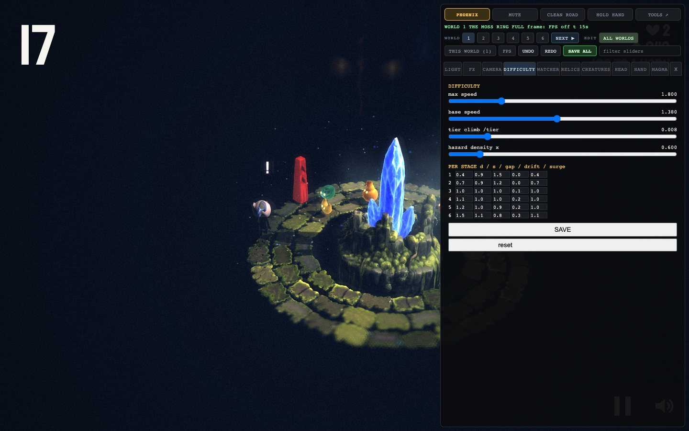
아트 디렉션 한 줄
둘째 날 이미지 모델이 하루 만에 네 가지 룩을 내놓았습니다. 두꺼운 외곽선의 광택, 플랫 벡터, 스티커 같은 큰 눈, 어디서 오는지 모를 분홍 빛. 넷 다 버렸습니다. 요소마다 스타일을 따로 입혀서 빛의 방향이 서로 맞지 않았습니다.
제가 쓴 브리프는 한 줄이었습니다.
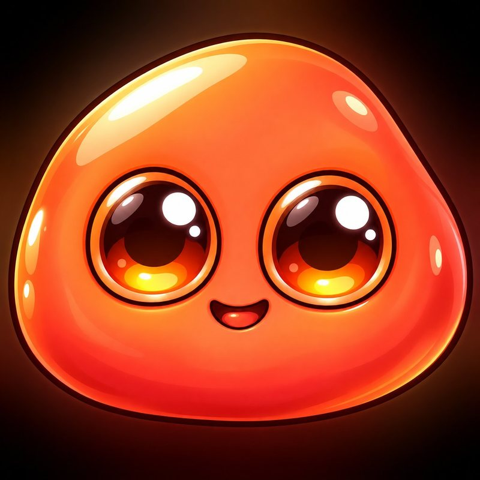
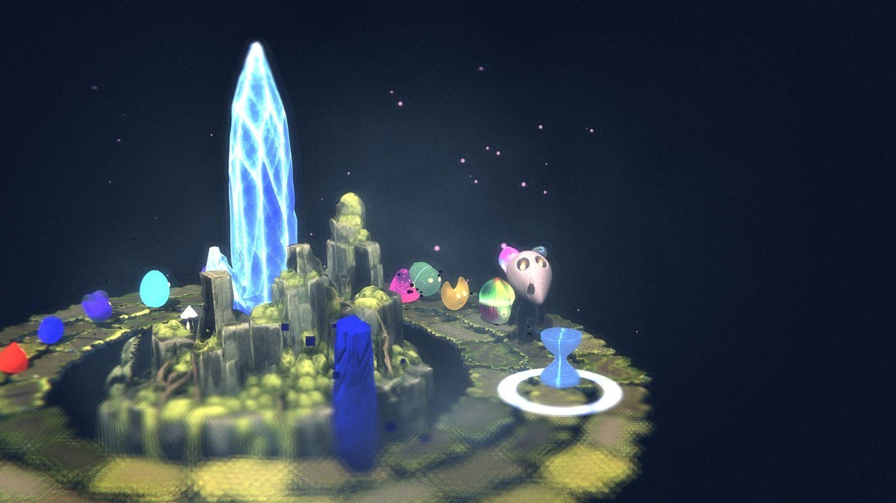
다른 게임에도 같은 방법으로
POPCHAIN: 튜닝 전에 목표부터
300개 레벨마다 캐주얼 플레이어의 목표 승률을 먼저 정합니다. 반응 속도가 0.55초부터 1.5초까지 다른 봇 셋이 모든 레벨을 플레이하고, 튜너가 캐주얼 승률이 맞을 때까지 레벨을 조정합니다.
DOPA DASH: 봇이 잡아낸 잘못된 하한
보통 봇이 HARD 레벨을 목표
DOPA DASH: 제가 읽지 못한 규칙
직접 해 보니 PERFECT를 받는 법을 알 수 없었습니다. 그래서 연습을 실제 필드로 옮기고, 박자 아래 타이밍 바와, 블루투스 이어폰처럼 기기의 소리 지연을 바로잡는 보정을 넣었습니다.
첫 1분은 바뀌었습니다. 더 많은 사람이 첫 관문을 넘는지는 아직 측정하지 못했습니다.
무엇이 언제 바뀌었나
| 바뀐 것 | 날짜 | 상태 |
|---|---|---|
| 첫 판이 죽을 일 없는 세 단계 레슨으로 시작 | 9월 19일 | 라이브 |
| 봇에 사람의 한계, 프로필별 첫 관문 통과율 | 9월 21일 | 도구에 반영 |
| 올라오는 모든 판에 빌드 표시 | 9월 21일 | 적용 |
| 누르기는 직접 해 보며 배우기, 12개 언어 | 9월 24일 | 라이브 |
| DOPA DASH 어려운 레벨 재조정: 초보 통과율 약 | 9월 28일 | 라이브 |
아직 말할 수 없는 것
레슨 뒤로 더 많은 사람이 첫 관문을 넘는지. 예전 순위표에는 4주치 빌드가 섞여 있었고, 꾸준히 하는 사람은 사실상 한 명이었습니다.
순위표는 9월 27일 dopaplay.io 서버로 옮겼습니다. 판마다 빌드 번호, 버틴 시간, 가장 멀리 간 세계는 남지만 무엇에 죽었는지는 아직 남지 않아, 빌드별 첫 1분 숫자를 보려면 그 서버에서 읽어 올 방법이 필요합니다.
봇과 사람으로 게임을 맞추며 배운 다섯 가지
-
01
게임을 하는 봇은 플레이어가 아닙니다
완벽한 봇은 판을 깰 수 있는지에는 답했지만, 사람이 그 판을 이해할지에는 답하지 못했습니다. 봇의 결과가 목표에 맞는 동안 사람은 그 10분의 1 정도밖에 버티지 못했습니다.
-
02
봇의 숫자를 믿기 전에 사람의 한계부터 넣습니다
늦은 반응, 타이밍 오차, 가끔 늦는 조작을 넣은 봇이어야 정말 중요한 질문에 답할 수 있었습니다. 사람이 첫 관문을 넘는가.
-
03
동작은 직접 해 보게 해서 가르칩니다
레슨은 실제 블록과 크리처로 진행하고, 죽을 일은 없습니다. 성공할 때마다 방금 한 동작의 이름을 불러 주니, 첫 1분이 지시 목록이 아니라 작은 성공의 연속이 됩니다.
-
04
덜어 내는 일은 디자이너가 정합니다
일주일 사이 에이전트가 변이 18개와 융합 8개를 만들었고, 모두 작동했습니다. 그것을 걷어 내자 게임이 좋아졌습니다. 코드는 AI에게 맡길 수 있어도, 게임에 무엇을 남길지는 맡길 수 없습니다.
-
05
지금 빌드로 판정합니다
매일 바뀐 게임의 4주가 섞인 순위표로는 사람이 봇보다 훨씬 짧게 버틴다는 것은 알 수 있어도, 오늘 빌드가 더 나은지는 알 수 없습니다. 이제 모든 판에 빌드가 붙고, 다음 과제는 빌드마다 판정할 수 있을 만큼 플레이어를 모으는 일입니다.